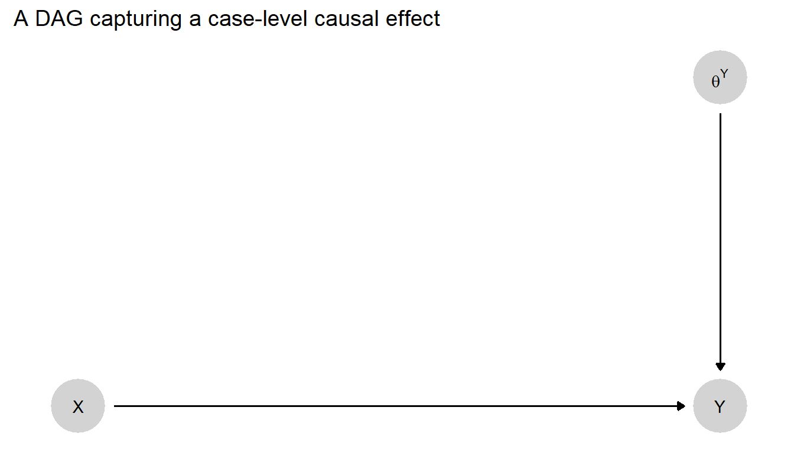
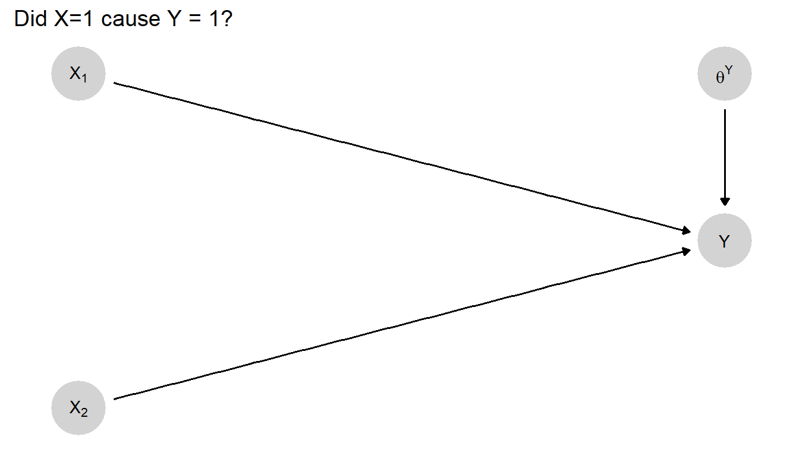
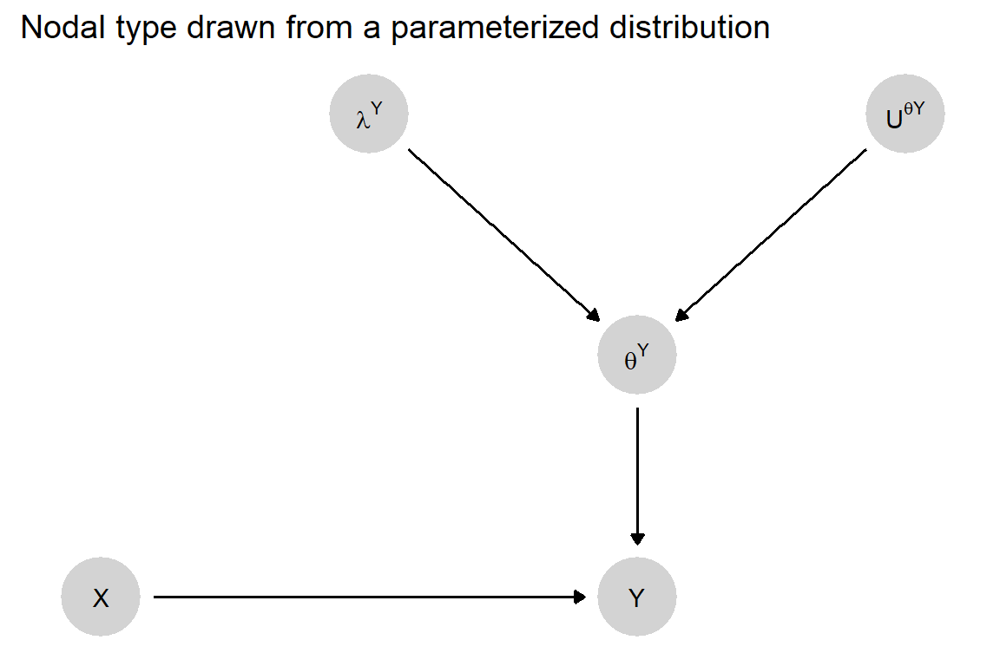
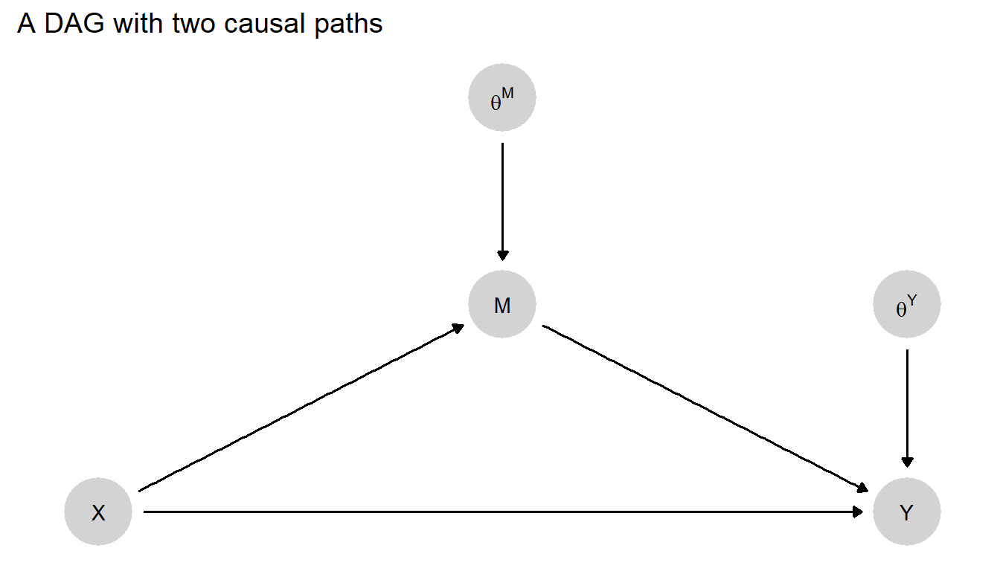
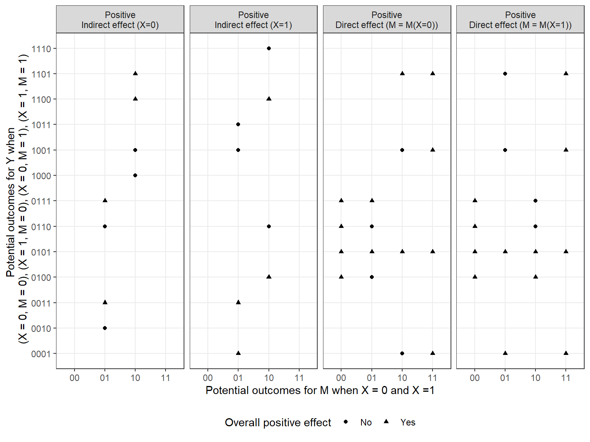
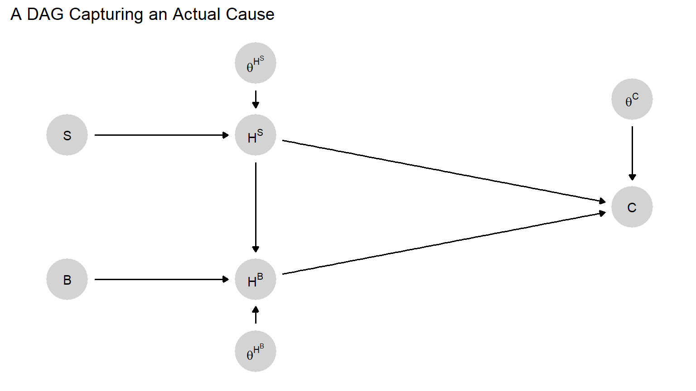

4 Causal Queries
Chapter summary
We describe major families of causal questions and illustrate how these can all be described as queries about the values of nodes in a causal model.
Although scholars share a broad common interest in causality, there is tremendous heterogeneity in the kinds of causal questions that scholars ask. Consider the relationship between inequality and democratization. We might seek to know inequality’s average impact on democratization across some broad set of cases. Alternatively, we might be interested in a particular case—say, Mongolia in 1995—and want to know whether inequality would have had an effect in this case. Or we might wonder whether the level of democracy in Mongolia in 1995 is due to the level of inequality in that case—yet another distinct question (in the same way that establishing that poison would make you sick does not imply that you are sick because of poison). In a different vein, we might be interested in how causal effects unfold, inquiring about the pathway or mechanism through which inequality affects democratization—a question we can also ask at two levels. We can ask whether inequality affected democratization in Mongolia through mobilization of the masses; or we can ask how commonly, across a broad set of cases, inequality affects democratization through mobilization of the masses. Pushing further, we might ask a counterfactual question of the form: Would inequality have produced democratization had mobilization been prevented from occurring?
Distinct methodological literatures have been devoted to the study of average causal effects, the analysis of case-level causal effects and explanations, and the identification of causal pathways. Fortunately, each of these questions can be readily captured as specific queries asked of (and answerable from) a causal model. As described by Pearl (2010), the goal is to deploy an “algorithm that receives a model M as an input and delivers the desired quantity Q(M) as the output.” More specifically, we demonstrate how, given a model as described in Chapter 2, a causal query can be represented as a question about the exogenous nodes on a causal graph (\(\theta\)). When we assimilate our causal questions into a causal model, we are placing what we want to know in formal relation to both what we already know and what we can potentially observe. As we will see in later chapters, this move allows us then to deploy a model to generate strategies of inference: To determine which observations, if we made them, would be likely to yield the greatest leverage on our query, given our prior knowledge about the way the world works. And by the same logic, once we see the evidence, this integration allows us to “update” on our query—to figure out in a systematic fashion what we have learned—in a manner that takes background knowledge into account.
In the remainder of this chapter, we walk through the conceptualization and causal-model interpretation of four key causal queries:
Case-level Causal Effects
Case-level causal attribution
Average causal effects
Causal pathways
These queries are in no way exhaustive of the causal questions that can be captured in causal graphs, but they are among the more common foci of social scientific investigation. In Appendix, we describe a still richer set of queries, including “actual causes,” and we show how the CausalQueries software package implements a general procedure for mapping queries onto causal types.
4.1 Case-Level Causal Effects
The simplest causal question is whether some causal effect operates in an individual case. Does \(X\) have an effect on \(Y\) in this case? For instance, is Yemen in 1995 a case in which a change in economic inequality would produce a change in whether or not the country democratizes? We could put the question more specifically as a query about a causal effect in a particular direction, for instance: Does inequality have a positive effect on democratization in the case of Yemen in 1995?
In counterfactual terms, a query about case-level causation is a question about what would happen if we could manipulate a variable in the case: If we could hypothetically intervene to change \(X\)’s value in the case, (how) would \(Y\)’s value change? To ask, more specifically, whether a positive or negative effect operates for a case is to ask whether a particular counterfactual relation holds in that case.
Consider the model in Figure 4.1. As introduced in Chapter 2, \(\theta^Y\) here represents the nodal type characterizing \(Y\)’s response to \(X\) and, if \(X\) and \(Y\) are binary, it can take on one of four values in this model: \(\theta^Y_{10}\), \(\theta^Y_{01}\), \(\theta^Y_{00}\), and \(\theta^Y_{11}\) (which map onto our \(a, b, c\), and \(d\) types, respectively).
In this model, then, the query, “What is \(X\)’s causal effect in this case?” simply becomes a question about the value of the nodal type \(\theta^Y\). If \(\theta^Y=\theta^Y_{10}\), for instance, this implies that \(X\) has a negative effect on \(Y\) in this case. If \(\theta^Y=\theta^Y_{00}\), this implies that \(X\) has no effect on \(Y\) in this case and that \(Y\) will always be \(0\).
We can also pose probabilistic versions of a case-level causal effect query. For instance, we can ask, “What is the probability that \(X\) has a positive effect on \(Y\) in this case?” Answering this question requires assessing the probability that \(\theta^Y = \theta^Y_{01}\).1 We can also ask, “What is the probability that \(X\) matters for \(Y\) in this case?” Answering this question involves adding the probability that \(X\) has a positive effect to the probability that it has a negative effect. That is, it involves adding the probability that \(\theta^Y = \theta^Y_{01}\) to the probability that \(\theta^Y = \theta^Y_{10}\). And we can ask, “What is the expected effect of \(X\) on \(Y\) in this case?” To answer this question, we need to estimate the probability that \(X\) has a positive effect minus the probability that it has a negative effect.
In sum, when posing probabilistic questions about case-level causal effects, we are still asking about the value of a \(\theta\) term in our model—but we are asking about the probability of the \(\theta\) term taking on some value or set of values. In practice, we will in this book most often be posing case-level causal-effect queries in probabilistic form.
We can conceptualize questions about case-level causal effects as questions about \(\theta\) terms even if our model involves more complex relations between \(X\) and \(Y\). The question itself does not depend on the model having any particular form. For instance, consider a mediation model of the form \(X\rightarrow M \rightarrow Y\). In this model, a positive effect of \(X\) on \(Y\) can emerge in two ways. A positive \(X \rightarrow Y\) effect can emerge from a positive effect of \(X\) on \(M\) followed by a positive effect of \(M\) on \(Y\). Yet we will also get a positive \(X \rightarrow Y\) effect from a sequence of negative intermediate effects: If an increase in \(X\) causes a decrease in \(M\), while a decrease in \(M\) causes an increase in \(Y\), then an increase in \(X\) will yield an increase in \(Y\).
Thus, there are two chains of intermediate effects that will generate a positive effect of \(X\) on \(Y\). Therefore, in this mediation model, the question, “What is the probability that \(X\) has a positive effect on \(Y\) in this case?” is asking whether either of those combinations of intermediate effects is operation. Specifically, we are asking about the following probability:
\[\begin{equation} \Pr((\theta^M = \theta^M_{01} \& \theta^Y = \theta^Y_{01}) \text{ OR } (\theta^M = \theta^M_{10} \& \theta^Y = \theta^Y_{10})) \end{equation}\]
In a similar way, a negative effect of \(X\) on \(Y\) can emerge from a chain of opposite-signed effects: either positive \(X \rightarrow M\) and then negative \(M \rightarrow Y\), or negative \(X \rightarrow M\) and then positive \(M \rightarrow Y\). Thus, to ask, “What is the probability that \(X\) has a negative effect on \(Y\) in this case?” is to ask about the following probability:
\[\begin{equation} \Pr((\theta^M = \theta^M_{01} \& \theta^Y = \theta^Y_{10}) \text{ OR } (\theta^M = \theta^M_{10} \& \theta^Y = \theta^Y_{01})) \end{equation}\]
Finally, to ask about the expected effect of \(X\) on \(Y\) in a case is to ask about the first probability (of a positive effect) minus the second (of a negative effect).
Notice that working with this more complex mediation model required us first to figure out which combinations of intermediate causal effects would generate the overall effect of \(X\) on \(Y\) that we were interested in. Mapping from sets of \(X \rightarrow M\) and \(M \rightarrow Y\) effects to the \(X \rightarrow Y\) effects that they yield allowed us to figure out which \(\theta^M\) and \(\theta^Y\) values correspond to the overall effect that we are asking about. We will make use of these kinds of mappings at many points in this book. But for now the key point is that, regardless of the complexity of a model, we can always pose questions about case-level causal effects as questions about a case’s nodal types or about the probability of it having a given set of nodal types.
4.2 Case-Level Causal Attribution
A query about causal attribution is closely related to, but different from, a query about a case-level causal effect. When asking about \(X\)’s case-level effect, we are asking, “Would a change in \(X\) cause a change in \(Y\) in this case?” The question of causal attribution asks: “Did \(X\) cause \(Y\) to take on the value it did in this case?” More precisely, we are asking, “Given the values that \(X\) and \(Y\) in fact took on in this case, would \(Y\)’s value have been different if \(X\)’s value had been different?”
Consider an example. We know that inequality in Taiwan was relatively low and that Taiwan democratized in 1996, but was low inequality a cause of Taiwan’s democratization in 1996? Equivalently: Given low economic inequality and democratization in Taiwan in 1996, would the outcome in this case have been different if inequality had been high? Notice that, when asking a causal attribution question, we are conditioning on the \(X\) and \(Y\) values that we in fact observe in the case.
Another way to put the point is that, when asking about causal attribution, we have already narrowed down the set of possible nodal types by observing the realized values of some nodes in the case of interest. For the simple \(X \rightarrow Y\) model in Figure 4.1, if we observe \(X=1\) and \(Y=1\) in the case at hand, then we know that either \(X\) had a positive effect on \(Y\) in this case or this is a case in which \(Y=1\) regardless of \(X\)’s value. So only two nodal types for \(Y\) are potentially in play: \(\theta^Y_{01}\) and \(\theta^Y_{11}\). So the attribution question is: Given we know that \(\theta^Y \in \{\theta^Y_{01}, \theta^Y_{11}\}\), does \(\theta^Y = \theta^Y_{01}\)? Or, probabilistically: What is \(\Pr(\theta^Y = \theta^Y_{01})\) given that \(\theta^Y \in \{\theta^Y_{01}, \theta^Y_{11}\}\)?
This query can be still defined as statements about nodal types when models are more complex. We may often think about matters of causal attribution in situations in which another potential cause of the outcome presents itself, and we want to know whether we can attribute the outcome to one condition or the other (or to both). Consider the slightly more complex setup in Figure 4.2. Here, \(Y\) is a function of two variables, \(X_1\) and \(X_2\). This means that \(\theta^Y\) is somewhat more complicated than in a setup with one causal variable: \(\theta^Y\) must here define \(Y\)’s response to all possible combinations of \(X_1\) and \(X_2\), including interactions between them.

With this model, a query about causal attribution—whether \(X_1 = 1\) caused \(Y=1\)—can take account of the value of \(X_2\). Parallel to our Taiwan example, suppose that we have a case in which \(Y=1\) and in which \(X_1\) was also 1, and we want to know whether \(X_1\) caused \(Y\) to take on the value it did. Answering this question requires knowing whether the case’s type is such that \(X_1\) would have had a positive causal effect on \(Y\), given what we know about \(X_2\)—which we can think of as part of the context.
In this setup, we can answer the query by consulting the characterization of nodal types for a two-parent node that we provided in Table 2.3. From that table, we can figure out for which nodal types \(X_1\) has a positive effect on \(Y\) given a particular value of \(X_2\).
Suppose that in the case at hand we observe \(X_2=1\). In Table 2.3, we can then see that we have four rows—rows 9 to 12—in which \(Y\) goes from 0 to 1 as \(X_1\) goes from 0 to 1 while \(X_2\) is fixed at 1. (The key columns here are the third and fourth, where for these rows we see that \(Y\) goes from 0 to 1 as we go from the third to the fourth column.) These four rows represent the four \(Y\)-nodal-types: \(\theta^Y_{0001}\), \(\theta^Y_{1001}\), \(\theta^Y_{0101}\), and \(\theta^Y_{1101}\). In other words, we can attribute a \(Y=1\) outcome to \(X_1=1\) if we are in the context \(\theta^{X_2} = \theta^{X_2}_1\) and \(\theta^Y\) is one of these four nodal types.
The probability that \(X_1=1\) caused \(Y=1\) given \(X_1=1, X_2=1\), and \(Y=1\) is the probability of these four types divided by the probability that \(Y=1\) given \(X_1=1\) and \(X_2=1\). The latter probability is the probability of being in the last eight rows of Table 2.3, which are the eight \(Y\)-nodal types consistent with the observation of \(X_1=1\), \(X_2=1\), and \(Y=1\).
Thus, a question about causal attribution is a question not just about how a case would behave given an intervention, but a question that conditions on observed node values in the case—and then asks how the outcome would have been different if circumstances had been different from what we know them to have been in this case.
4.3 Average Causal Effects
While the queries we have considered so far operate at the case level, we can also pose causal queries at the level of populations. One of the most common population-level queries is a question about an average causal effect. In counterfactual terms, a question about average causal effects is: If we manipulated the value of \(X\) for all cases in the population—first setting \(X\) to one value for all cases, then changing it to another value for all cases—by how much would the average value of \(Y\) in the population change? Like other causal queries, a query about an average causal effect can be conceptualized as learning about a node in a causal model.
We can do this by conceiving of any given case as being a member of a population with each unit endowed with nodal types. When we seek to estimate an average causal effect, we seek information about the proportions or shares of these nodal types in the population.
More formally and adapted from Humphreys and Jacobs (2015), we can use \(\lambda^Y_{ij}\) to refer to the share of cases in a population that has nodal type \(\theta^Y_{ij}\). Thus, given our four nodal types in a two-variable binary setup, \(\lambda^Y_{10}\) is the proportion of cases in the population with negative effects; \(\lambda_{01}\) is the proportion of cases with positive effects; and so on. One nice feature of this setup, with both \(X\) and \(Y\) as binary, is that the average causal effect can be simply calculated as the share of positive-effect cases minus the share of negative-effect cases: \(\lambda^Y_{01} - \lambda^Y_{10}\).
Graphically, we can represent this setup by including \(\lambda^Y\) in a more complex causal graph as in Figure 4.3. We might think of this graph as standing in for a still more complex graph in which we replicate the \(X\rightarrow Y\leftarrow \theta^Y\) graph for as many units as we have and have \(\lambda^Y\) point into each \(\theta^Y\) (see Figure 9.2 for an example).
As in our setup for case-level causal effects, \(X\)’s effect on \(Y\) in a case depends on (and only on) the case’s nodal type, \(\theta^Y\). The key difference is that we now model the case’s type not as exogenously given, but as a function of two additional variables: the distribution of nodal types in a population and a random process through which the case’s type is “drawn” from that distribution. We represent the type distribution as \(\lambda^Y\): a vector of values for the proportions \(\lambda^Y_{10}, \lambda^Y_{01}, \lambda^Y_{00}, \lambda^Y_{11}\). We represent the random process for drawing a case’s \(\theta^Y\) value from that distribution as \({U ^ \theta} ^Y\).
In practice, it is the components of \(\lambda^Y\)—the shares of different nodal types in the population—that will be of substantive interest. In this model, our causal query—about \(X\)’s average causal effect—is defined by the shares of negative- and positive-causal-effect cases, respectively, in the population. “What is \(X\)’s average effect on \(Y\)?” amounts to asking: What are the values of \(\lambda^Y_{10}\) and \(\lambda^Y_{01}\)? As with \(\theta^Y\), \(\lambda^Y\) is not directly observable. And so the empirical challenge—to which we devote later parts of this book—is to figure out what we can observe that would allow us to learn about \(\lambda^Y\)’s component values?2

We can, of course, likewise pose queries about other population-level causal quantities. For instance, we could ask for what proportion of cases in the population \(X\) has a positive effect? This would be equivalent to asking the value of \(\lambda^Y_{01}\), one element of the \(\lambda^Y\) vector. Or we could ask about the proportion of cases in which \(X\) has no effect, which would be asking about \(\lambda^Y_{00} + \lambda^Y_{11}\), capturing the two ways in which there can be zero effect.
We can also ask conditional queries about average effects. For instance, for the DAG in Figure 4.2 with two causal variables, we can ask what is the average causal effect of \(X_1\) on \(Y\) for units in which \(X_2=1\). In this model, \(\lambda\) is a 16-element vector, with a share for each of \(Y\)’s 16 nodal types, covering all possible joint effects of \(X_1\) and \(X_2\). So this query, conditioning on \(X_1\), asks about the difference between the proportion of the population that is of a type in which \(X_1\) has a positive effect when \(X_2=1\) and the proportion in which \(X_1\) has a negative effect when \(X_2=1\).3
4.4 Causal Paths
To develop richer causal understandings, researchers often seek to describe the causal path or paths through which effects propagate. Consider the DAG in Figure 4.4, in which \(X\) can affect \(Y\) through two possible pathways: directly and via \(M\). Assume again that all variables are binary, taking on values of \(0\) or \(1\). Here, we have nodal types defining \(M\)’s response to \(X\) (\(\theta^M\)) and nodal types defining \(Y\)’s response to both \(X\) (directly) and \(M\) (\(\theta^Y\)).
Suppose that we observe \(X=1\) and \(Y=1\) in a case. Suppose, further, that we have reasonable confidence that \(X\) has had a positive effect on \(Y\) in this case. We may nonetheless be interested in knowing whether that causal effect ran through \(M\). We will refer to this as a query about a causal path. Importantly, a causal path query is not satisfied simply by asking whether some mediating event along the path occurred. We cannot, for instance, establish that the top path in Figure 4.4 was operative simply by determining the value of \(M\) in this case—though that will likely be useful information.
Rather, the question of whether the mediated (via \(M\)) causal path is operative is a composite question of two parts: First, does \(X\) have an effect on \(M\) in this case? Second, does that effect—the difference in \(M\)’s value caused by a change in \(X\)—in turn cause a change in \(Y\)’s value? In other words, what we want to know is whether the effect of \(X\) on \(Y\) depends on—that is, will not operate without—the effect of \(X\) on \(M\).
We take the question of whether a path is operative in producing an effect as the same as the question of whether there is an indirect effect as asked in mediation analysis. Indeed as emphasized in mediation analysis there are two types of “indirect effects” of \(X\) on \(Y\) via \(M\) (when \(X\) is fixed at \(X=0\) and at \(X=1\)), and similarly two types of “direct” effects (when \(M\) is fixed at \(M(X=0)\) and at \(M(X=1)\)).
Using potential outcomes notation, a positive indirect effect would be present (for \(x\in \{0,1\}\)) if: \[Y(X=x, M = M(X=1)) > Y(X = x, M = M(X=0)).\]
Written using causal functions this is:
\[f^Y(X=x, M = f^M(X=1,\theta^M), \theta^Y) > f^Y(X = x, M = f^M(X=0, \theta^M), \theta^Y)).\]
Both expressions ask whether there would be an increase in the value of \(Y\) if \(M\) were to change in the way that it would change due to a change in \(X\), but without an actual change in \(X\) (see Pearl (2009), p 132, Imai, Keele, and Tingley (2010)). Note there are two versions of this query, one for \(x=0\) (holding X constant at 0) and one for \(x=1\) (holding X constant at 1).
Similarly, a positive direct effect would be present if: \[f^Y(X=1, M = f^M(X=x,\theta^M), \theta^Y) > f^Y(X = 0, M = f^M(X=x, \theta^M), \theta^Y))\].
Again there are two versions of the query, one for \(x=0\) and one for \(x=1\).
From these expressions we can see that, asking whether a causal effect operated via a given path is in fact asking about a specific set of causal effects lying along that path, as captured by \(\theta^M\) and \(\theta^Y\).

We now work through the logic that links queries to nodal types \(\theta^M\) and \(\theta^Y\), focusing on positive effects of \(X\) on \(Y\) that work through \(M\) for a case with \(X=1\).
First, note that there are two sequences of effects that would allow \(X\)’s positive effect on \(Y\) to operate via \(M\): (1) \(X\) has a positive effect on \(M\), which in turn has a positive effect on \(Y\); or (2) \(X\) has a negative effect on \(M\), which in turn has a negative effect on \(Y\).
The first question then is whether \(X\) affects \(M\) in this case. This is a question about the value of \(\theta^M\). We know that \(\theta^M\) can take on four possible values corresponding to the four possible responses to \(X\): \(\theta^M_{10}, \theta^M_{01}, \theta^M_{00}, \theta^M_{11}\). For sequence (1) to operate, \(\theta^M\) must take on the value \(\theta^M_{01}\), representing a positive effect of \(X\) on \(M\). For sequence (2) to operate, \(\theta^M\) must take on the value \(\theta^M_{10}\), representing a negative effect of \(X\) on \(M\).
Next, note that \(\theta^Y\) defines \(Y\)’s response to different combinations of both \(X\) and \(M\)—since both of these variables point directly into \(Y\). Given that \(Y\) has two binary parents, there are 16 possible values for \(\theta^Y\)—again as shown earlier in Table 2.3, simply substituting \(X\) and \(M\) for \(X_1\) and \(X_2\). Note that these 16 nodal types capture the full range of causal possibilities. For instance, they allow for \(M\) to affect \(Y\) and, thus, to potentially pass on a mediated effect of \(X\). They allow for \(X\) to have a direct, unmediated effect on \(Y\). And there are nodal types in which \(X\) and \(M\) interact in affecting \(Y\).
What values of \(\theta^Y\) then are compatible with the operation of a positive effect of \(X\) on \(Y\) via \(M\)? Let us first consider this question with respect to sequence (1), in which \(X\) has a positive effect on \(M\), and that positive effect is necessary for \(X\)’s positive effect on \(Y\) to occur. For this sequence to operate, as we have said, \(\theta^M\) must take on the value of \(\theta^M_{01}\). When it comes to \(\theta^Y\), then, what we need to look for are types in which \(X\)’s effect on \(Y\) depends on \(M\)’s taking on the values it does as a result of \(X\)’s positive effect on \(M\).
We are thus looking for nodal types for \(Y\) that capture two kinds of counterfactual causal relations operating on nodes. First, \(X\) must have a positive effect on \(Y\) when \(M\) undergoes the change that results from \(X\)’s positive effect on \(M\). This condition ensures simply that \(X\) has the required effect on \(Y\) in the presence of \(X\)’s effect on \(M\). Second, that change in \(M\), generated by a change in \(X\), must be necessary for \(X\)’s positive effect on \(Y\) to operate. This condition specifies the path, ensuring that \(X\)’s effect actually runs through (i.e., depends on) its effect on \(M\).
- Is \(X=1\) a counterfactual cause of \(Y=1\), given \(X\)’s positive effect on \(M\)? Establishing this positive effect of \(X\) involves two queries:
Where \(X=0\), does \(Y=0\)? As we are assuming \(X\) has a positive effect on \(M\), if \(X=0\) then \(M=0\) as well. So, we need that \(Y=0\) when \(X=0, M=0\).
Where \(X=1\), does \(Y=1\)? Given \(X\)’s assumed positive effect on \(M\), \(M=1\) under this condition. So, we need \(Y=1\) when \(X=1, M=1\).
- Is \(X\)’s effect on \(M\) necessary for \(X\)’s positive effect on \(Y\)? That is, do we see \(Y=1\) only if \(M\) takes on the value that \(X=1\) generates (which is \(M=1\))? To determine this, we inspect the counterfactual condition in which \(X=1\) and \(M=0\), and we ask: Does \(Y=0\)? Thus we need \(Y=0\) when \(X=1\) but \(M=0\). In that case we know that \(M\) changing to \(1\) when \(X\) goes to \(1\) is necessary for \(X\)’s effect on \(Y\) to operate (i.e., that the effect operates through the \(M\) path).
We now have enough to identify the types of \(\theta^Y\) that answer the query. We again use notation of the form \(\theta^Y_{wxyz}\) where:
- \(w\) is the potential outcome for \(Y\) when \((X = 0, M = 0)\)
- \(x\) is the potential outcome for \(Y\) when \((X = 1, M = 0)\)
- \(y\) is the potential outcome for \(Y\) when \((X = 0, M = 1)\)
- \(z\) is the potential outcome for \(Y\) when \((X = 1, M = 1)\)
The three conditions then imply that \(w=0\) (condition 1a), \(z=1\) (condition 1b), and \(x=0\) (condition 2). This leaves us with only two qualifying nodal types for \(Y\): \(\theta^Y=\theta_{0001}\) and \(\theta_{0011}\).
We can undertake the same exercise for when \(X\) has a negative effect on \(M\), or \(\theta^M=\theta^M_{10}\). Here, we adjust the three queries for \(\theta^Y\) to take account of this negative effect. Thus, we adjust query 1a so that we are looking for \(Y=0\) when \(X=0\) and \(M=1\). In query 1b, we look for \(Y=1\) when \(X=1\) and \(M=0\). And for query 2, we want types in which \(Y\) fails to shift to \(1\) when \(X\) shifts to \(1\) but \(M\) stays at \(1\). Types \(\theta_{0100}\) and \(\theta_{1100}\) pass these three tests.
In sum, we can define this query about causal paths as a query about the value of \(\theta\) terms on the causal graph. For the graph in Figure 4.4, asking whether a positive effect of \(X\) on \(Y\) for an \(X=1\) case runs via the \(M\)-mediated path is asking whether one of four combinations of \(\theta^M\) and \(\theta^Y\) holds in the case:
- \(\theta^M=\theta^M_{01}\) and (\(\theta^Y=\theta_{0001}\) or \(\theta_{0011}\))
- \(\theta^M=\theta^M_{10}\) and (\(\theta^Y=\theta_{0100}\) or \(\theta_{1100}\))
The same kind of exercise can be conducted for other pathway inquiries. Thus, Figure 4.5 shows the combinations of \(\theta^X\) and \(\theta^Y\) that combine to make common pathway queries. Here we distinguish between direct and indirect effects when there are and are not overall positive effects. The figure highlights the counterintuitive fact that it is possible to have different types of positive pathway effects without these producing an overall positive effect.4

Finally, though stated here in terms of the case level types that answer a pathway query, it is a conceptually small move to address population queries. As we did with average effects, these can now be constructed as statements about the shares of a population that answer different queries.
It is worth noting how different this formulation of the task of identifying causal pathways is from widespread understandings of process tracing. Scholars commonly characterize process tracing as a method in which we determine whether a mechanism was operating by establishing whether the events that are lying along that path occurred. As a causal-model framework makes clear, finding out that \(M=1\) (or \(M=0\), for that matter) does not establish what was going on causally. Observing this intervening step does not by itself tell us what value \(M\) would have taken on if \(X\) had taken on a different value, or whether this would have changed \(Y\)’s value. We need instead to conceive of the problem of identifying pathways as one of figuring out the counterfactual response patterns of the variables along the causal chain.
4.5 Conclusion
For each of the causal queries we have described in this chapter, we have discussed several types of causal questions that social scientists often pose to their data and have shown how we can define these queries in terms of collections of nodal types on a causal graph.
In Appendix, we show how the mapping from causal questions to nodal types can be generalized to many different types of queries (as the CausalQueries software package does). These queries all involve summaries of the values of nodes given different types of interventions (or the absence of interventions) on other nodes. But we highlight that it is not hard to expand the set of queries still further to introduce broader, and more normative, considerations. Thus, for instance, one might ask whether an effect is large enough to merit some investment or whether the distribution of effects is justifiable given some normative considerations.
In connecting general queries to causal types, we prepare the ground for developing an empirical research design. Nodal types cannot themselves be directly observed. However, as we will demonstrate later in the book, defining causal queries as summaries of causal types, links observable elements of a causal model to the unobservable objects of inquiry—allowing us to use the former to draw inferences about the latter.
4.6 Chapter Appendix
4.6.1 Actual Causes
In the main text, we dealt with causes in the standard counterfactual sense: antecedent conditions for which a change would have produced a different outcome. Sometimes, however, we are interested in identifying antecedent conditions that were not counterfactual difference-makers but that nonetheless generated or produced the outcome.
Though conceptually complex, queries of this form may be quite important for historical and legal applications and so we give an overview of them here though point to Halpern (2016) for an authoritative treatment of these ideas.
We will focus on situations in which an outcome was “overdetermined”: Multiple conditions were present, each of which on their own, could have generated the outcome. Then, none of these conditions caused the outcome in the counterfactual sense; yet one or more of them may have been distinctively important in producing the outcome. The concept of an actual cause can be useful in putting a finer point on this kind of causal question.
A motivating example used in much of the literature on actual causes (e.g., Hall 2004) imagines two characters, Suzy and Billy, simultaneously throwing stones at a bottle. Both are excellent shots and hit whatever they aim at. Suzy’s stone hits first, knocks over the bottle, and the bottle breaks. However, Billy’s stone would have hit had Suzy’s not hit, and again the bottle would have broken. Did Suzy’s throw cause the bottle to break? Did Billy’s?
By the usual definition of causal effects, neither Suzy’s nor Billy’s action had a causal effect: Without either throw, the bottle would still have broken. We commonly encounter similar situations in the social world. We observe, for instance, the onset of an economic crisis and the breakout of war—either of which would be sufficient to cause the government’s downfall—but with (say) the economic crisis occurring first and toppling the government before the war could do so. In this situation, neither economic crisis nor war in fact made a difference to the outcome: Take away either one and the outcome remains the same.
To return to the bottle example, while neither Suzy’s nor Billy’s throw is a counterfactual cause, it just seems obvious that Suzy broke the bottle, and Billy did not. We can formalize this intuition by defining Suzy’s throw as the actual cause of the outcome. Using the definition provided by (Halpern 2015), building on (Halpern and Pearl 2005) and others, we say that a condition (\(X\) taking on some value \(x\)) was an actual cause of an outcome (of \(Y\) taking on some value \(y\)), where \(x\) and \(y\) may be collections of events, if:
- \(X=x\) and \(Y=y\) both happened;
- there is some set of variables, \(\mathcal W\), such that if they were fixed at the levels that they actually took on in the case, and if \(X\) were to be changed, then \(Y\) would change (where \(\mathcal W\) can also be an empty set);
- no strict subset of \(X\) satisfies 1 and 2 (there is no redundant part of the condition, \(X=x\)).
The definition thus describes a condition that would have been a counterfactual cause of the outcome if we were to imagine holding constant some set of events that in fact occurred (and that, in reality, might not have been constant if the actual cause had not in fact occurred).
Let us now apply these three conditions to the Suzy and Billy example. Conditions 1 and 3 are easily satisfied, since Suzy throw and the bottle break (Condition 1), and “Suzy threw” has no strict subsets (Condition 3).
Condition 2 is met if Suzy’s throw made a difference, counterfactually speaking—with the important caveat that, in determining this, we are permitted to condition on (to fix in the counterfactual comparison) any event or set of events that actually happened (or on none at all). To see why Condition 2 is satisfied, we have to think of there being three steps in the process: (1) Suzy and Billy throw, (2) Suzy’s or Billy’s rock hits the bottle, and (3) the bottle breaks. In actuality, Billy’s stone did not hit the bottle, so we are allowed to condition on that fact in determining whether Suzy’s throw was a counterfactual cause (even though we know that Billy’s stone would have hit if Suzy’s hadn’t). Conditional on Billy’s stone not hitting, the bottle would not have broken had Suzy not thrown.
From the perspective of counterfactual causation, it may seem odd to condition on Billy’s stone not hitting the bottle when thinking about Suzy not throwing the stone—since Suzy’s throwing the stone was the very thing that prevented Billy’s from hitting the bottle. It feels close to conditioning on the bottle not being broken. Yet Halpern argues that this is an acceptable thought experiment for establishing the importance of Suzy’s throw since conditioning is constrained to the actual facts of the case. Moreover, the same logic shows why Billy is not an actual cause. The reason is that Billy’s throw is only a cause in those conditions in which Suzy did not hit the bottle. But because Suzy actually hit the bottle, we are not permitted to condition on Suzy not hitting the bottle in determining actual causation. We thus cannot—even through conditioning on actually occurring events—construct any counterfactual comparison in which Billy’s throw is a counterfactual cause of the bottle’s breaking.
The striking result here is that there can be grounds to claim that a condition was the actual cause of an outcome even though, under the counterfactual definition, the effect of that condition on the outcome is 0. (At the same time, all counterfactual causes are automatically actual causes; they meet Condition 2 by conditioning on nothing at all, an empty set \(\mathcal W\).) One immediate methodological implication follows: Since actual causes need not be causes, there are risks in research designs that seek to understand causal effects by tracing back actual causes—that is, the way things actually happened. If we traced back from the breaking of the bottle, we might be tempted to identify Suzy’s throw as the cause of the outcome. We would be right only in an actual-causal sense, but wrong in the standard, counterfactual causal sense. Chains of events that appear to “generate” an outcome are not always causes in the counterfactual sense.5
As with other causal queries, the question “Was \(X=x\) the actual cause of \(Y=y\)?” can be redefined as a question about which combinations of nodal types produce conditions under which \(X\) could have made a difference. To see how, let us run through the Billy and Suzy example again, but formally in terms of a model. Consider Figure 4.6, where we represent Suzy’s throw (\(S\)), Billy’s throw (\(B\)), Suzy’s rock hitting the bottle (\(H^S\)), Billy’s rock hitting the bottle (\(H^B\)), and the bottle cracking (\(C\)). Each endogenous variable has a \(\theta\) term associated with it, capturing its nodal type. We capture the possible “preemption” effect with the arrow pointing from \(H^S\) to \(H^B\), allowing whether Suzy’s rock hits to affect whether Billy’s rock hits.6
For Suzy’s throw to be an actual cause of the bottle’s cracking, we need first to establish that Suzy threw (\(\theta^S=\theta^S_1\)) and that the bottle cracked (\(C=1\)) (Condition 1). Condition 3 is automatically satisfied in that \(\theta^S=\theta^S_1\) has no strict subsets. Turning now to Condition 2, we need Suzy’s throw to be a counterfactual cause of the bottle cracking if we condition on the value of some set of nodes remaining fixed at the values they in fact took on. As discussed above, we know that we can meet this criterion if we condition on Billy’s throw not hitting. To make this work, we need to ensure, first, that Suzy’s throw hits if and only if she throws; so \(\theta^{H^S}=\theta^{H^S}_{01}\). Next, we need to ensure that Billy’s throw does not hit whenever Suzy’s does: This corresponds to any of the four nodal types for \(H^B\) that take the form \(\theta^{H^B}_{xx00}\). Those last two zeroes in the subscript mean simply that \(H^B=0\) whenever \(H^S=1\). Note that the effect of Billy throwing on Billy hitting when Suzy has not thrown—the first two terms in the nodal-type’s subscript—does not matter since we have already assumed that Suzy does indeed throw.
Finally, we need \(\theta^C\) to take on a value such that \(H^S\) has a positive effect on \(C\) when \(H^B=0\) (Billy doesn’t hit) since this is the actual circumstance on which we will be conditioning. This is satisfied by any of the four nodal types of the form \(\theta^C_{0x1x}\). This includes, for instance, a \(\theta^C\) value in which Billy’s hitting has no effect on the bottle (perhaps Billy doesn’t throw hard enough): e.g., \(\theta^C_{0011}\). Here, Suzy’s throw is a counterfactual cause of the bottle’s cracking. And, as we have said, all counterfactual causes are actual causes. They are, simply, counterfactual causes when we hold nothing fixed (\(\mathcal W\) in Condition 2 is just the empty set).
Notably, we do not need to specify the nodal type for \(B\): Given the other nodal types identified, Suzy’s throw will be the actual cause regardless of whether or not Billy throws. If Billy does not throw, then Suzy’s throw is a simple counterfactual cause (given the other nodal types).
The larger point is that actual cause queries can, like all other causal queries, be defined as questions about the values of nodes in a causal model. When we pose the query, “Was Suzy’s throw an actual cause of the bottle cracking?”, we are in effect asking whether the case’s combination of nodal types (or its causal type) matches \(\theta^S_1, \theta^B_x, \theta^{H^B}_{xx00}, \theta^{H^S}_{01}, \theta^C_{0x1x}\).
Likewise, if we want to ask how often Suzy’s throw is an actual cause, in a population of throwing rounds, we can address this query as a question about the joint distribution of nodal types. We are then asking how common the qualifying combinations of nodal types are in the population given the distribution of types at each node.

Actual causes are conceptually useful whenever there are two sufficient causes for an outcome, but one preempts the operation of the other. For instance, we might posit that both the United States’ development of the atomic bomb was a sufficient condition for US victory over Japan in World War II, and that US conventional military superiority was also a sufficient condition and would have operated via a land invasion of Japan. Neither condition was a counterfactual cause of the outcome because both were present. However, holding constant the absence of a land invasion, the atomic bomb was a difference-maker, rendering it an actual cause. The concept of actual cause thus helps capture the sense in which the atomic bomb distinctively contributed to the outcome, even if it was not a counterfactual cause.
An extended notion (Halpern 2016, p 81) of actual causes restricts the imagined counterfactual deviations to states that are more likely to arise (more “normal”) than the factual state. We will call this notion a “notable cause.” We can say that one cause, \(A\), is “more notable” than another cause, \(B\), if a deviation in \(A\) from its realized state is (believed to be) more likely than a deviation in \(B\) from its realized state.
For intuition, we might wonder why a Republican was elected to the presidency in a given election. In looking at some minimal winning coalition of states that voted Republican, we might distinguish between a set of states that always vote Republican and a set of states that usually go Democratic but voted Republican this time. If the coalition is minimal winning, then every state that voted Republican is a cause of the outcome in the standard (difference-making) sense. However, only the states that usually vote Democratic are notable causes since it is only for them that the counterfactual scenario (voting Democratic) was more likely to arise than the factual scenario. In a sense, we take the “red” states’ votes for the Republican as given—placing them, as it were, in the causal background—and identify as “notable” those conditions that mattered and easily could have gone differently. By the same token, we can say that, among those states that voted Republican this time, those that more commonly vote Democratic are more notable causes than those that less commonly vote Democratic.
How notable a counterfactual cause is can be expressed as a claim about the distribution of a set of nodal types. For instance, if we observe \(R_j=1\) for state \(j\) (it voted Republican), then the notability of this vote directly increases with our belief about the probability that \(\theta^{R_j}=\theta_0^{R_j}\)—that is, with the probability that the state’s vote could have gone the other way. The higher the probability that a state could have voted Democratic, the more notable a cause we consider its voting Republican.
4.6.2 General Procedure for Mapping Queries to Causal Types
In the next parts of this appendix, we describe a general method for mapping from queries to causal types. In particular, we describe the algorithm used by the CausalQueries software package to define queries and a walk-through of how to use CausalQueries to identify the causal types associated with different queries.
The algorithm calculates the full set of outcomes on all nodes, given each possible causal type and a collection of controlled conditions (“do operations”). Then each causal type is marked as satisfying the query or not. This in turn then tells us the set of types that satisfy a query. Quantitative queries, such as the probability of a query being satisfied, or the average treatment effect, can then be calculated by taking the measure of the set of causal types that satisfies the query.
First, some notation.
Let \(n\) denote the number of nodes. Label the nodes \(V_1, \dots V_n\) subject to the requirement that each node’s parents precede it in the ordering. Let \(pa_j\) denote the set of values of the parents of node \(j\) and let \(V_j(pa_j, \theta_t)\) denote the value of node \(j\) given the values of its parents and the causal type \(\theta_t\).
The primitives of a query are questions about the values of outcomes, \(V\), given some set of controlled operations \(x\).
- Let \(x = (x_1, \dots x_n)\) denote a set of
dooperations where each \(x_i\) takes on a value in \(\{-1,0,1\}\). here -1 indicates “not controlled”, 0 means set to 0 and 1 means set to 1 (this set can be expanded if \(V\) is not binary). - Let \(V(x, \theta_t)\) denote the values \(V\) (the full set of nodes) takes given \(\theta_t\).
- A “simple query” is a function \(q(V(x, \theta_t))\) which returns TRUE if \(V(x, \theta_t)\) satisfies some condition and FALSE otherwise.
Queries are summaries of simple queries. For instance, for nodes \(X\) and \(Y\):
- Query \(Q_1:\mathbb{1}(Y(X=1)=1))\) asks whether \(Y=1\) when \(X\) is set to 1. This requires evaluating one simple query.
- Query \(Q_2:\mathbb{1}(Y(X=1)=1) \& \mathbb{1}(Y(X=0)=0))\) is composed of two simple queries: The first returns true if \(Y\) is 1 when \(X\) is set to 1, the second returns true if \(Y\) is 0 when \(X\) is set to 0; both conditions holding corresponds to a positive effect on a unit.
- Query \(Q_3:E((\mathbb{1}(Y(X=1)=1) \& (Y(X=0)=0)) - (\mathbb{1}(Y(X=1)=0) \& \mathbb{1}(Y(X=0)=1))\) asks for the average treatment effect, represented here using four simple queries: the expected difference between positive and negative effects. This query involves weighting by the probability of the causal types.
Then, to calculate \(V(x, \theta_t)\):
- Calculate \(v_1\), the realized value of the first node, \(V_1\), given \(\theta_t\). This is given by \(v_1 = x_1\) if \(x_1 \neq -1\) and by \(\theta_t^{V_1}\) otherwise.
- For each \(j \in 2...n\) calculate \(v_j\) using either \(v_j = x_j\) if \(x_j \neq -1\) and \(V_{j}(pa_j, \theta_t)\) otherwise, where the values in \(pa_j\) are determined in the previous steps.
We now have the outcomes, \(V\), for all nodes given the operations \(x\) and so can determine \(q(V(x))\). From there, we can calculate summaries of simple queries across causal types.
A last note on conditional queries. Say, we are interested in an attribution query of the form: What is the probability that \(X\) causes \(Y\) in a case in which \(X=1\) and \(Y=1\). In this case, define simple query \(q_1\) which assesses whether \(X\) causes \(Y\) for a given \(\theta_t\) and simple query \(q_2\) which assesses whether \(X=1\) and \(Y=1\) under \(\theta_t\). We then calculate the conditional query by conditioning on the set of \(\theta\)s for which \(q_2\) is true and evaluating the share of these for which \(q_2\) is true (weighting by the probability of the causal types).
4.6.3 Identifying causal types for queries with CausalQueries
We first demonstrate how queries are calculated using the CausalQueries package for a chain model of the form \(X \rightarrow M \rightarrow Y\) and then generalize.
Imagine first a chain model of this form in which we assume no negative effects of \(M\) on \(X\) or \(M\) on \(Y\). We will also suppose that in fact \(X=1\), always. Doing this keeps the parameter space a little smaller for this demonstration but also serves to demonstrate that a causal model can make use of the counterfactual possibility that a node takes on a particular value even if it never does in fact.
We then ask two questions:
- Q1. What is the probability that \(X\) has a positive effect on \(Y\)? (“POS”)
- Q2. What is the probability that \(X=1\) causes \(Y=1\) in cases in which \(X=1\) and \(Y=1\)? (“POC”)
To answer these two queries, we define a simple query \(q_1\) which assesses whether \(X\) causes \(Y\) for each \(\theta\) and a second simple query \(q_2\) which assesses whether \(X=1\) and \(Y=1\) for each \(\theta\). In this example, the first simple query involves some do operations, the second does not.
Code tofor answering these two simple queries is shown below and the output is shown in Table 4.1 (one row for each causal type).
model <- make_model("X -> M -> Y") |>
set_restrictions("X[]==0") |>
set_restrictions("M[X=1] < M[X=0]") |>
set_restrictions("Y[M=1] < Y[M=0]")
q1 <- "Y[X = 1] > Y[X = 0]"
q2 <- "X == 1 & Y == 1"
df <- data.frame(
a1 = get_query_types(model, q1)$types,
a2 = get_query_types(model, q2)$types,
p = CausalQueries:::get_type_prob(model))| a1 | a2 | p | |
|---|---|---|---|
| X1.M00.Y00 | FALSE | FALSE | 0.111 |
| X1.M01.Y00 | FALSE | FALSE | 0.111 |
| X1.M11.Y00 | FALSE | FALSE | 0.111 |
| X1.M00.Y01 | FALSE | FALSE | 0.111 |
| X1.M01.Y01 | TRUE | TRUE | 0.111 |
| X1.M11.Y01 | FALSE | TRUE | 0.111 |
| X1.M00.Y11 | FALSE | TRUE | 0.111 |
| X1.M01.Y11 | FALSE | TRUE | 0.111 |
| X1.M11.Y11 | FALSE | TRUE | 0.111 |
The answer to the overall queries are then (1) the expected value of (the answers to) \(q_1\) given weights \(p\) and (2) the expected value of (the answers to) \(q_1\) given \(q_0\) and weights \(p\). See the next block of code for the implementation in CausalQueries and Table 4.2 for the results.
df |> summarize(
POS = weighted.mean(a1, p),
POC = weighted.mean(a1[a2], p[a2])
)| POS | POC |
|---|---|
| 0.111 | 0.2 |
Given the equal weighting on causal types, these answers reflect the fact that for five of nine causal types, we expect to see \(X=1\) and \(Y=1\) but that the causal effect is present for only one of nine causal types and for one of the five causal types that exhibit \(X=1\) and \(Y=1\).
In practice, querying is done in one step. Like this for an unconditional query:
# POS
query_model(model, query = "Y[X = 1] > Y[X = 0]")And like this for a conditional query:
# POC
query_model(model, query = "Y[X = 1] > Y[X = 0]",
given = "X == 1 & Y == 1")The same procedure can be used to identify any set of types that correspond to a particular query. Table 4.3 illustrates the procedure, showing the syntax for model definition and queries along with the syntax for identifying implied types using get_query_types.
Warning in kableExtra::column_spec(., 1, width = "7em"): Please specify format
in kable. kableExtra can customize either HTML or LaTeX outputs. See
https://haozhu233.github.io/kableExtra/ for details.Warning in kableExtra::column_spec(., 2, width = "10em"): Please specify format
in kable. kableExtra can customize either HTML or LaTeX outputs. See
https://haozhu233.github.io/kableExtra/ for details.Warning in kableExtra::column_spec(., 3, width = "7em"): Please specify format
in kable. kableExtra can customize either HTML or LaTeX outputs. See
https://haozhu233.github.io/kableExtra/ for details.Warning in kableExtra::column_spec(., 4, width = "10em"): Please specify format
in kable. kableExtra can customize either HTML or LaTeX outputs. See
https://haozhu233.github.io/kableExtra/ for details.Warning in kableExtra::column_spec(., 5, width = "10em"): Please specify format
in kable. kableExtra can customize either HTML or LaTeX outputs. See
https://haozhu233.github.io/kableExtra/ for details.Warning in kable_styling(kabble(q) %>% kableExtra::column_spec(1, width =
"7em") %>% : Please specify format in kable. kableExtra can customize either
HTML or LaTeX outputs. See https://haozhu233.github.io/kableExtra/ for details.| Model | Query | Given | Interpretation | Types |
|---|---|---|---|---|
| X -> Y | Y[X=1] > Y[X=0] | Probability that X has a positive effect on Y | X0.Y01, X1.Y01 | |
| X -> Y | Y[X=1] < Y[X=0] | X == 1 | Probability that X has a negative effect on Y among those for whom X=1 | X1.Y10 |
| X -> Y | Y[X=1] > Y[X=0] | X==1 & Y==1 | Probability that Y=1 is due to X=1 (Attribution) | X1.Y01 |
| X -> Y <- W | Y[X=1] > Y[X=0] | W == 1 | Probability that X has a positive effect on Y for a case in which W = 1 (where W is possibly defined post treatment) | W1.X0.Y0001, W1.X1.Y0001, W1.X0.Y1001, W1.X1.Y1001, W1.X0.Y0011, W1.X1.Y0011, W1.X0.Y1011, W1.X1.Y1011 |
| X -> Y <- W | Y[X=1, W = 1] > Y[X=0, W = 1] | W==0 | Probability that X has a positive effect on Y if W were set to 1 for cases for which in fact W=0 | W0.X0.Y0001, W0.X1.Y0001, W0.X0.Y1001, W0.X1.Y1001, W0.X0.Y0011, W0.X1.Y0011, W0.X0.Y1011, W0.X1.Y1011 |
| X -> Y <- W | Y[X=1] > Y[X=0] | Y[W=1] > Y[W=0] | Probability that X has a positive effect on Y for a case in which W has a positive effect on Y | W0.X0.Y0110, W1.X1.Y0001, W1.X1.Y1001, W0.X0.Y0111 |
| X -> Y <- W | (Y[X=1, W = 1] > Y[X=0, W = 1]) > (Y[X=1, W = 0] > Y[X=0, W = 0]) | W==1 & X==1 | Probability of a positive interaction between W and X for Y; the probability that the effect of X on Y is stronger when W is larger | W1.X1.Y0001, W1.X1.Y1001, W1.X1.Y1011 |
| X -> M -> Y <- X | Y[X = 1, M = M[X=1]] > Y[X = 0, M = M[X=1]] | X==1 & M==1 & Y==1 | The probability X would have a positive effct on Y if M were controlled to be at the level it would take if X were 1 for units for which in fact M==1 | X1.M01.Y0001, X1.M11.Y0001, X1.M01.Y1001, X1.M11.Y1001, X1.M01.Y0101, X1.M11.Y0101, X1.M01.Y1101, X1.M11.Y1101 |
| X -> M -> Y <- X | (Y[M = 1] > Y[M = 0]) & (M[X = 1] > M[X = 0]) | Y[X=1] > Y[X=0] & M==1 | The probability that X causes M and M causes Y among units for which M = 1 and X causes Y | X1.M01.Y0001, X1.M01.Y0011 |
All of these queries correspond to the probability of some set of types. We might call these simple queries. Other complex queries (including the average treatment effect) can be thought of as operations on the simple queries.
For instance:
the average treatment effect,
Y[X=1] - Y[X=0]is the difference between the simple queriesY[X=1] > Y[X=0]andY[X=1] < Y[X=0], or more simply the difference between the queriesY[X=1]==1andY[X=0]==1the interaction query
Q = (Y[X = 1, W = 1] - Y[X = 0, W = 1]) - (Y[X = 1, W = 0] - Y[X = 0, W = 0])is similarly a combination of the simple queries(Y[X = 1, W = 1] ==1,Y[X = 0, W = 1]==1,Y[X = 1, W = 0]==1, andY[X = 0, W = 0]==1.
For linear complex queries like this, we can proceed by identifying a set of positive or negative coefficients for each causal type that can be used to combine the probabilities of the types.
For instance, for the interaction query, Q, get_query_types(model, Q) would identify a set of positive or negative coefficients for each causal type that range from -2 to 2, with a 2, for instance corresponding to a type for which a change in \(W\) changes the effect of \(X\) from -1 to 1. See Table 4.4 for coefficients on types when \(X=1\) and \(W =1\).
Warning in kableExtra::column_spec(., 1, width = "6em"): Please specify format
in kable. kableExtra can customize either HTML or LaTeX outputs. See
https://haozhu233.github.io/kableExtra/ for details.Warning in kableExtra::column_spec(data.frame(weight = -2:2, cases =
sapply(-2:2, : Please specify format in kable. kableExtra can customize either
HTML or LaTeX outputs. See https://haozhu233.github.io/kableExtra/ for details.Warning in kable_styling(kableExtra::column_spec(data.frame(weight = -2:2, :
Please specify format in kable. kableExtra can customize either HTML or LaTeX
outputs. See https://haozhu233.github.io/kableExtra/ for details.| weight | cases |
|---|---|
| -2 | W1.X1.Y0110 |
| -1 | W1.X1.Y0100, W1.X1.Y0010, W1.X1.Y1110, W1.X1.Y0111 |
| 0 | W1.X1.Y0000, W1.X1.Y1100, W1.X1.Y1010, W1.X1.Y0101, W1.X1.Y0011, W1.X1.Y1111 |
| 1 | W1.X1.Y1000, W1.X1.Y0001, W1.X1.Y1101, W1.X1.Y1011 |
| 2 | W1.X1.Y1001 |
A little more carefully: Insofar as we believe the effect is either positive or it is not, the true answer to the question—the estimand—is a yes or a no; the probability is an answer that captures our beliefs about the estimand. Alternatively, we could imagine asking about the share of a population for which a positive effect operates, a type of query that we use quite a bit later in the book.↩︎
Note also that \(\lambda^Y\) can be thought of as itself drawn from a distribution, such as a Dirichlet. The hyperparameters of this underlying distribution of \(\lambda\) would then represent our uncertainty over \(\lambda\) and hence over average causal effects in the population.↩︎
As we discuss at greater length in Section 9.3.2 of Chapter 9, this conditional average effect query is subtly different from a case-level query about an observed case with a particular value on a variable. A case-level query might take the form: What would we believe the causal effect of \(X_1\) on \(Y\) to be in a case randomly drawn from the population in which we observed \(X_2=1\). In this latter query, the observation of a unit with particular features might provide information that would allow us to update on \(\lambda\)—that is, on what kind of world we are in. The conditional average effect query, in contrast, assumes a distribution over \(\lambda\) and simply queries that distribution.↩︎
To choose one example, if \(\theta^M = \theta^M_{01}\) and \(\theta^Y = \theta^Y_{1001}\), then, \(Y\) would be 1 if either \(X\) and \(M\) were both 0 or if \(X\) and \(M\) were both 1. If \(X\) were 1, then we would have \(M=1\) and \(Y=1\), and \(M=1\) because \(X=1\). And, given \(X=1\), \(Y=1\) only because \(M=1\)—which is due to \(X\). Thus, there is an indirect effect. However, had \(X\) been 0 then \(M\) would have been 0 and \(Y\) would have been 1 — so no overall effect.↩︎
Perhaps more surprising, it is possible that the expected causal effect is negative, but that \(X\) is an actual cause in expectation. For instance, suppose that 10% of the time Suzy’s shot intercepts Billy’s shot but without hitting the bottle. In that case, the average causal effect of Suzy’s throw on bottle breaking is \(-0.1\), yet 90% of the time Suzy’s throw is an actual cause of bottle breaking (and 10% of the time it is an actual cause of non-breaking). For related discussions, see Menzies (1989).↩︎
We do not need an arrow in the other direction because Suzy throws first.↩︎